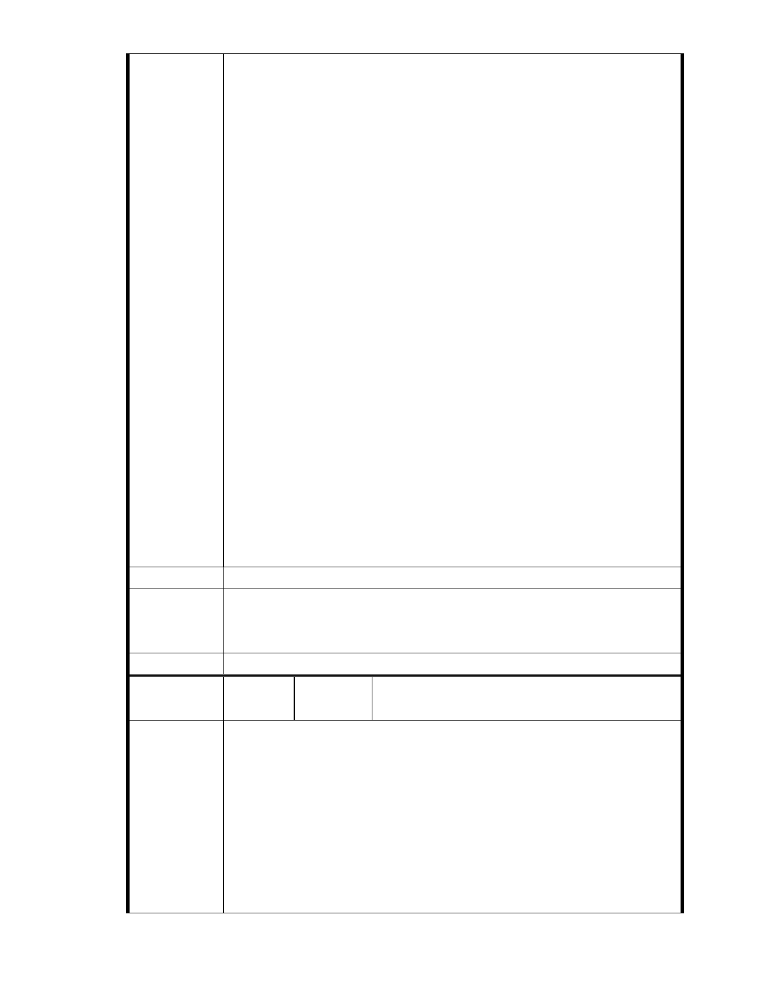

所設計 20 年洪水頻率似乎已非最近這兩年暴雨量所能承受，建議應再經
水利專家再做模擬，以符合本區生態之容受力。（詳 990928 第三次討論會
議紀錄）
七、專案小組歷次審查結論
1、第一次專案小組審查會議結論一：「本案區域排水問題請規劃單位續
就居民所補送陳情書內容及提高設計標準再做考量與回應，並向當地居
民進行詳細說明與溝通」。（詳 940708 第一次專案小組審查會議紀錄）
2、專案小組會勘（水土保持部分）結論一：「本案北基地為周邊陵線集
水排向西側大湖之出口，區位敏感，其規劃留設之滯洪池，於未來開發
後須確保不會被挪作他用」。(940825 專案小組會勘（水土保持部分）紀
錄)
3、專案小組會勘（水土保持部分）結論三：「依民國 59 年之航照圖視之，
原北基地應屬大湖之一部分，對照於中部地區水利地遭居民佔用所造成
之災害，則本案原「水利地」的功能是否仍應保留值得再做探討。」 (940825
專案小組會勘（水土保持部分）紀錄)
陳情意見：
1、「台北市山坡地開發建築基地規劃設計技術規範」已廢止，所提細部
計劃應予以修正為新適用的法規。
2、本基地部分原為窪地或湖泊，為儘可能恢復其原防洪排水功能，其開
發除須依規定留設防洪排水設施外，並應配合提供所屬集水區域所需之
沉砂與滯洪空間。
建議辦法
3、本案基地屬山坡地範圍，必須擬具水土保持計畫書送審。排水系統以
重現期距二十五年之降雨強度計算，滯洪設施入流歷線至少採重現期距
五十年以上之洪水。
市府說明
委員會決議
一、相關陳情意見將納入本案審查人民意見，依法定程序辦理。
二、後續審理程序將要求申請人加強與在地區民、社會大眾，就基地現
況、規劃方案及環境助益作為等方面加強溝通。
同編號 1。
編號
陳情理由
孫文郁（99.12.2 於本會網站傳送資料、市長信
61
陳情人
箱（ MA201012030024 ））
陳情案名：
「變更台北市內湖區成功路 5 段大湖公園北側部份保護區及道路用地為
社會福利特定專用區主要計劃案」及「擬定台北市內湖區成功路 5 段大
湖公園北側社會福利特定專用區細部計劃案」
事實：
一、全案無公共設施用地 100％作為可建地
依據 99 年 11 月所提細部計劃第 5 頁：「劃設社會福利特定專用區一處，
面積總計 44829 平方公尺，以供社會福利事業發展使用」。
二、建蔽率 30％、容積率 160％
- 57 -